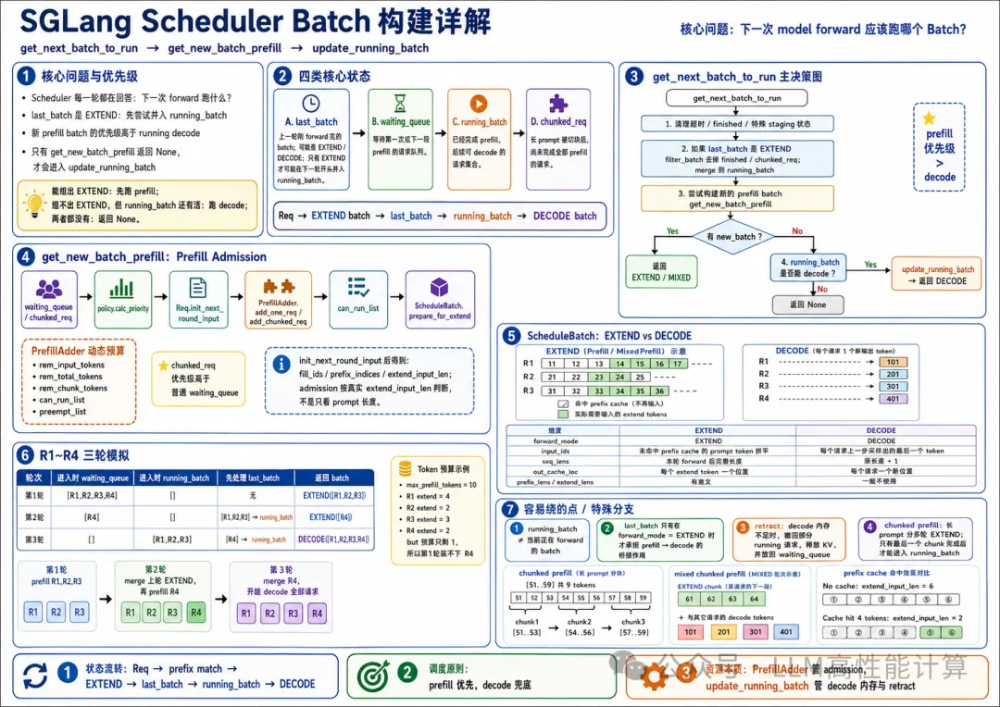

SGLang推理优化-调度器核心ScheduleBatch |
本文围绕 Scheduler 调度器里最核心的 Batch 构建逻辑展开：
| ●●● |
1get_next_batch_to_run |
这条链路决定了下一次 forward 到底跑什么，是新的 prefill，还是已有请求的 decode。Batch 构建逻辑比较绕，建议先用下面的模拟请求把状态流转看懂，再回到代码里逐行阅读。

| 一句话理解 |
|
Scheduler 每一轮调度，本质是在回答一个问题： |
| ●●● |
1下一次 model forward 应该跑哪个 Batch？ |
这个问题不能只看 waiting_queue，也不能只看 running_batch，而是要同时处理 4 类状态：
| ●●● |
1last_batch: |
核心决策图如下：
| ●●● |
1┌───────────────────────────────────────────────┐ |
这里最重要的优先级是：
| ●●● |
1last_batch 如果是 EXTEND，合入 running_batch 发生在本轮最开始。 |
换句话说：
| ●●● |
1waiting_queue / chunked_req 能组出 EXTEND: |
这个优先级解释了一个常见现象：即使 running_batch 里已经有很多请求在等 decode，只要 Scheduler 还能安全接入新的 prefill，它仍然会先返回 EXTEND batch。
| 关键代码位置 |
|
主要涉及以下文件：
|
| 代码主干先拆开看 |
|
这部分代码最绕的原因是：一个函数里同时处理“调度决策”和“状态迁移”。建议先把三个函数的职责边界分清楚。 |
| ●●● |
1get_next_batch_to_run: |
| get_next_batch_to_run 的关键分段 |
|
可以把 get_next_batch_to_run 看成 5 个连续阶段。 |
| ●●● |
1阶段 1：处理不能继续等待或运行的请求 |
这一段的重点不是构建 batch，而是保证后面的队列状态是干净的。已经超时或被 abort 的请求，不能继续参与 admission。
| ●●● |
1阶段 2：处理上轮 batch |
last_batch 是 event loop 每轮末尾直接赋值的：
| ●●● |
1batch = get_next_batch_to_run() |
所以它可能是：
| ●●● |
1EXTEND: |
因此代码只处理：
| ●●● |
1self.last_batch.forward_mode.is_extend() |
这是 prefill 到 decode 生命周期的入口。上一轮返回的 EXTEND batch 经过 forward 和采样后，会在本轮开头尝试合入 running_batch。
这一段有两个关键细节：
| ●●● |
1filter_batch: |
这里“可以合入 running_batch”的含义是：
| ●●● |
1普通非 chunked prefill: |
| ●●● |
1阶段 3：优先尝试新 prefill |
这就是 prefill 优先级的来源。只要 get_new_batch_prefill 能组出一个 batch，本轮就不会走普通 decode。
| ●●● |
1阶段 4：没有 prefill 时，才推进 running decode |
这里的 update_running_batch 不只是“把 forward_mode 改成 DECODE”，它会先过滤 finished 请求、检查内存、必要时 retract。
| ●●● |
1阶段 5：返回前做 DP attention / ngram / schedule time 处理 |
所以主干决策是前 4 段，最后一段是返回 batch 前的补充处理。
| get_new_batch_prefill 的关键分段 |
|
get_new_batch_prefill 的核心是 admission：决定哪些请求可以进入本轮 EXTEND batch。 它不是按条数拿请求，而是按资源预算逐个尝试： |
| ●●● |
1waiting_queue |
关键代码可以分成 6 段。
| ●●● |
1阶段 1：快速失败 |
这里检查的是“有没有必要尝试 prefill”。如果 running batch 已满、没有等待请求、请求池没有槽位，就直接返回 None，让外层去尝试 decode。
| ●●● |
1阶段 2：给 waiting_queue 排优先级 |
这一步会改变 waiting_queue 的调度顺序。后续 for req in waiting_queue 不是原始到达顺序，而是策略处理后的顺序。
| ●●● |
1阶段 3：创建 PrefillAdder |
这里 PrefillAdder.__init__ 的参数名是 rem_input_tokens，但调用方传进去的是：
| ●●● |
1self.max_prefill_tokens |
对应关系是：
| ●●● |
1Scheduler._get_new_batch_prefill_raw: |
所以：
| ●●● |
1rem_input_tokens 的初始值 |
Scheduler.max_prefill_tokens 又来自 model worker 初始化阶段：
| ●●● |
1self.tp_worker.get_worker_info() |
从配置角度看，它最终受 ServerArgs.max_prefill_tokens、模型 worker 可用 KV/显存预算、后端实现等共同影响。对调度器这段代码而言，它就是“本轮 prefill 最多允许消耗多少 input token”的预算上限。
PrefillAdder 的作用是维护本轮 prefill 的动态预算：
| ●●● |
1can_run_list: |
| ●●● |
1阶段 4：优先处理未完成的 chunked_req |
这个分支很关键。长 prompt 的中间 chunk 已经占用了部分状态，如果不优先继续调度，会造成资源和状态难以收敛。因此 chunked_req 的优先级高于普通 waiting_queue。
| ●●● |
1阶段 5：逐个尝试 waiting_queue 里的请求 |
这一段是最关键的地方。
req.init_next_round_input(tree_cache) 会先做：
| ●●● |
1fill_ids = origin_input_ids + output_ids |
也就是说，进入 add_one_req 前，请求已经知道：
| ●●● |
1完整序列多长 |
adder.add_one_req 再判断：
| ●●● |
1extend_input_len + max_new_tokens + page_size 是否超过 rem_total_tokens |
如果允许加入：
| ●●● |
1adder.can_run_list.append(req) |
_update_prefill_budget 会扣减：
| ●●● |
1rem_input_tokens -= ceil_paged_tokens(extend_input_len) |
如果不允许：
| ●●● |
1返回 NO_TOKEN / OTHER |
| ●●● |
1阶段 6：把 can_run_list 变成 EXTEND batch |
ScheduleBatch.init_new 只创建 batch 对象；prepare_for_extend 才真正把 Req 转成 forward 所需张量。
| prepare_for_extend 的关键产物 |
|
prepare_for_extend 的核心输入是每个请求的： |
| ●●● |
1fill_ids |
它构造出的关键字段是：
| ●●● |
1input_ids: |
这一步还有一个容易忽略的副作用：它会更新 Req 自身的内存状态。
| ●●● |
1req.req_pool_idx = req_pool_indices[i] |
所以 prepare_for_extend 不是纯粹构造 tensor，它也把请求正式推进到了“已经为 prefill 分配资源”的状态。
| update_running_batch 的关键分段 |
|
update_running_batch 的任务是把 running_batch 变成下一轮 decode batch。 主干可以拆成 4 段： |
| ●●● |
1阶段 1：过滤已经完成的请求 |
这里会把已经 finished 的请求从 running_batch 中移除，并同步过滤 req_pool_indices、seq_lens、sampling_info 等 batch 字段。
| ●●● |
1阶段 2：检查下一步 decode 内存 |
check_decode_mem 会估算下一次 decode 需要多少 KV cache：
| ●●● |
1普通 decode: |
如果空间不够，就进入 retract。
| ●●● |
1阶段 3：retract 后把请求放回 waiting_queue |
retract 会释放这些请求占用的 KV cache，但不会丢失请求进度。请求带着已有 output_ids 回到 waiting_queue，后续会再次通过 init_next_round_input 做 prefix match。
| ●●● |
1阶段 4：构建 DECODE batch |
prepare_for_decode 做的事情和 prepare_for_extend 完全不同：
| ●●● |
1input_ids: |
所以 update_running_batch 的本质是：
| ●●● |
1running_batch |
| 先看三个重要对象 |
| Req 是请求的状态机 |
|
Req 不是只保存输入 prompt，它会在调度和 forward 过程中持续变化。 一个生成请求可以简化成： |
| ●●● |
1Req( |
关键字段可以这样理解：
|
字段
|
含义
|
|---|---|
| origin_input_ids |
用户 prompt 的 token ids
|
| output_ids |
已经采样出来的输出 token ids
|
| fill_ids |
当前需要考虑的完整序列，通常是 origin_input_ids + output_ids
|
| prefix_indices |
prefix cache 命中的 KV 位置
|
| extend_input_len |
本轮 prefill 还需要实际 forward 的 token 数
|
| req_pool_idx |
req-to-token pool 中给这个请求分配的槽位
|
| kv_committed_len |
已经确认写入 KV cache 的序列长度
|
| kv_allocated_len |
已经分配的 KV cache 长度
|
| ScheduleBatch 是 forward 前的批处理数据 |
|
ScheduleBatch 是 Scheduler 传给 model worker 的 batch 状态。 它既保存请求列表： |
| ●●● |
1batch.reqs = [R1, R2, R3] |
也保存 forward 需要的张量：
| ●●● |
1batch.input_ids |
最关键的是 forward_mode：
| ●●● |
1EXTEND: |
| PrefillAdder 是 admission controller |
|
PrefillAdder 决定 waiting_queue 里的请求哪些能进入新的 prefill batch。 它同时考虑： |
| ●●● |
1请求池槽位是否足够 |
因此 get_new_batch_prefill 不是简单的 waiting_queue[:batch_size]。
| 模拟实际的请求 |
|
下面用 4 个请求模拟主流程。假设： |
| ●●● |
1page_size = 1 |
初始请求：
|
请求
|
prompt token
|
max_new_tokens
|
prefix cache 命中
|
初始 output_ids
|
|---|---|---|---|---|
|
R1
|
[11,12,13,14] |
3
|
0
|
[] |
|
R2
|
[21,22,23] |
2
|
1 个 token
|
[] |
|
R3
|
[31,32,33,34,35,36] |
2
|
3 个 token
|
[] |
|
R4
|
[41,42] |
2
|
0
|
[] |
初始 Scheduler 状态：
| ●●● |
1waiting_queue = [R1, R2, R3, R4] |
| 模拟请求的主干路径图 |
|
下面这张图只对应后面 R1-R4 的简化场景：没有 DP attention、没有 overlap、没有 speculative decoding、没有 disaggregation，也没有 chunked prefill。它用来帮助先理解主干路径。 |
| ●●● |
1┌──────────────────────────────┐ |
注意第 1 步非常重要：如果上轮跑的是 prefill，last_batch 会在下一轮调度开始时尝试并入 running_batch。普通 prefill 完成且未 generation finished 的请求会进入 decode；未完成的 chunked prefill 会被排除，等最后一个 chunk 完成后再进入。
| 第 1 轮：从 waiting_queue 构建 prefill batch |
|
第一次调用： |
| ●●● |
1get_next_batch_to_run() |
此时：
| ●●● |
1last_batch = None |
| get_next_batch_to_run 前半段 |
|
因为没有 last_batch，也没有已有 running_batch，前半段基本不会改变状态。 随后进入： |
| ●●● |
1new_batch = self.get_new_batch_prefill() |
| get_new_batch_prefill 创建 PrefillAdder |
|
get_new_batch_prefill 内部会调用 _get_new_batch_prefill_raw，先做几个快速判断： |
| ●●● |
1running_batch.batch_is_full ? 否 |
然后创建 PrefillAdder。
此时 PrefillAdder 的关键预算可以简化理解为：
| ●●● |
1rem_input_tokens = max_prefill_tokens = 10 |
这里的 10 来自本例前面假设的 max_prefill_tokens = 10。真实运行时，PrefillAdder 收到的是 Scheduler 的 self.max_prefill_tokens，然后赋给自己的 self.rem_input_tokens。
| 逐个检查 waiting_queue |
R1先调用： |
| ●●● |
1req.init_next_round_input(self.tree_cache) |
R1 没有 prefix cache 命中：
| ●●● |
1fill_ids = origin_input_ids + output_ids |
然后进入：
| ●●● |
1adder.add_one_req(R1, ...) |
R1 占用 4 个 prefill token，允许加入：
| ●●● |
1can_run_list = [R1] |
R2
R2 命中 1 个 prefix token：
| ●●● |
1fill_ids = [21,22,23] |
加入后：
| ●●● |
1can_run_list = [R1, R2] |
R3
R3 命中 3 个 prefix token：
| ●●● |
1fill_ids = [31,32,33,34,35,36] |
加入后：
| ●●● |
1can_run_list = [R1, R2, R3] |
R4
R4 需要 2 个 prefill token：
| ●●● |
1fill_ids = [41,42] |
但当前 rem_input_tokens = 1，不够放 R4。此时 add_one_req 会返回类似 AddReqResult.OTHER 或 NO_TOKEN 的结果，调度停止继续扩张这个 prefill batch。
最终：
| ●●● |
1can_run_list = [R1, R2, R3] |
| 构建 ScheduleBatch |
|
get_new_batch_prefill 接着执行： |
| ●●● |
1new_batch = ScheduleBatch.init_new(...) |
init_new 只是创建 batch 壳子，真正把请求变成 forward 张量的是 prepare_for_extend。
| prepare_for_extend 做了什么 |
|
对 R1、R2、R3 来说： |
| ●●● |
1R1: |
所以 Batch 张量大致是：
| ●●● |
1batch.forward_mode = EXTEND |
同时 prepare_for_extend 会分配内存：
| ●●● |
1req_pool_indices: |
可视化：
| ●●● |
1EXTEND batch |
get_next_batch_to_run 看到 new_batch is not None，直接返回这个 EXTEND batch。
第 1 轮返回：
| ●●● |
1return EXTEND([R1, R2, R3]) |
此时还没有立刻把它放进 running_batch。它会先被 forward，forward 完后成为 last_batch。下一轮调度开头，如果它是已完成 prefill 的请求，就会被合入 running_batch。
| 第 2 轮：EXTEND last_batch 合入 running_batch，再继续找新 prefill |
|
假设第 1 轮 EXTEND forward 完成后，每个请求已经采样出第一个 token： |
| ●●● |
1R1.output_ids = [101] |
Scheduler 会记录：
| ●●● |
1last_batch = EXTEND([R1, R2, R3]) |
第二次调用：
| ●●● |
1get_next_batch_to_run() |
| 先判断 last_batch 是否需要合并进 running_batch |
|
代码主干是： |
| ●●● |
1if self.last_batch and self.last_batch.forward_mode.is_extend(): |
这里先判断 last_batch.forward_mode.is_extend()。如果上一轮跑的是 DECODE，就不会走这段 merge 逻辑。
filter_batch 会把已经 generation finished 的请求过滤掉，也会按 chunked_req_to_exclude 排除未完成的 chunked prefill。当前例子没有 chunked prefill，如果 R1/R2/R3 都还没结束：
| ●●● |
1running_batch = [R1, R2, R3] |
这里有个容易混淆的点：
| ●●● |
1EXTEND batch forward 后，不会在同一轮立即变成 DECODE。 |
| 再尝试新的 prefill |
|
此时 waiting_queue 还有 R4，所以 Scheduler 继续尝试： |
| ●●● |
1new_batch = self.get_new_batch_prefill() |
R4 的状态：
| ●●● |
1fill_ids = [41,42] |
如果内存和请求槽位允许，R4 会组成新的 prefill batch：
| ●●● |
1return EXTEND([R4]) |
第 2 轮返回：
| ●●● |
1return EXTEND([R4]) |
注意这一轮虽然 running_batch 里已经有 R1/R2/R3，但因为有新的 prefill 可以跑，所以优先跑 R4 的 prefill，而不是 decode R1/R2/R3。
状态图：
| ●●● |
1第 2 轮开始 |
| 第 3 轮：没有新 prefill，开始 update_running_batch 做 decode |
|
假设第 2 轮 R4 prefill 完成后： |
| ●●● |
1R4.output_ids = [401] |
第三次调用：
| ●●● |
1get_next_batch_to_run() |
| 先合入 R4 |
|
last_batch 是 EXTEND，所以合入 running_batch： |
| ●●● |
1running_batch = [R1, R2, R3, R4] |
| get_new_batch_prefill 返回 None |
|
因为 waiting_queue 空了： |
| ●●● |
1new_batch = None |
于是进入 decode 路径：
| ●●● |
1self.running_batch = self.update_running_batch(self.running_batch) |
| update_running_batch 的主流程 |
|
update_running_batch 可以拆成 4 步： |
| ●●● |
11. filter_batch |
如果 R1/R2/R3/R4 都还没结束，且 decode 内存足够，则进入：
| ●●● |
1batch.prepare_for_decode() |
| prepare_for_decode 做了什么 |
|
此时每个请求的 output_ids 至少有一个 token： |
| ●●● |
1R1.output_ids = [101] |
decode forward 的输入就是每个请求上一步采样出的最后一个 token：
| ●●● |
1batch.forward_mode = DECODE |
同时为每个请求分配一个新的 KV 写入位置：
| ●●● |
1batch.out_cache_loc = alloc_for_decode(batch, token_per_req=1) |
并更新长度：
| ●●● |
1prefill 后 seq_lens: |
可视化：
| ●●● |
1DECODE batch |
第 3 轮返回：
| ●●● |
1return DECODE([R1, R2, R3, R4]) |
| 一张表看完三轮状态变化 |
这就是最常见的主干逻辑： |
||||||||||||||||||||
| ●●● | ||||||||||||||||||||
1新请求 prefill 优先。 |
| Batch 字段在 EXTEND 和 DECODE 中的区别 |
| EXTEND batch |
|
EXTEND 关注的是“哪些 prompt token 还没有 KV，需要补算”。 |
| ●●● |
1input_ids: |
| DECODE batch |
|
DECODE 关注的是“每个请求继续生成一个 token”。 |
| ●●● |
1input_ids: |
对比：
|
字段
|
EXTEND
|
DECODE
|
|---|---|---|
| forward_mode | EXTEND | DECODE |
| input_ids |
未缓存的 prompt token 拼平
|
每个请求 1 个 last output token
|
| seq_lens |
prompt/prefix 处理后的完整长度
|
原长度 + 1
|
| out_cache_loc |
每个 extend token 一个位置
|
每个请求一个位置
|
| prefix_lens |
有意义
|
一般不使用
|
| extend_lens |
有意义
|
一般不使用
|
| 为什么 prefill 后要下一轮才合入 running_batch |
|
因为 get_next_batch_to_run 返回 batch 后，还要经过： |
| ●●● |
1run_batch |
只有 forward 结束后，Scheduler 才知道：
| ●●● |
1这个请求是否 finished |
所以 prefill batch 不能在构建出来时立刻进入 decode。它必须先作为 last_batch 经过一次 forward 结果处理，然后在下一轮调度开头经过 filter_batch。
合入规则可以简化成：
| ●●● |
1last_batch 不是 EXTEND: |
| update_running_batch 中的 retract 是什么 |
|
decode 阶段每轮都要给每个 running request 新增 KV cache。 如果当前 running_batch 太大，下一步 decode 的 KV cache 不够，update_running_batch 会触发： |
| ●●● |
1batch.retract_decode(...) |
可以把 retract 理解成：
| ●●● |
1为了避免 decode OOM，临时撤回一部分 running 请求。 |
简化例子：
| ●●● |
1running_batch = [R1,R2,R3,R4] |
可能发生：
| ●●● |
1保留: [R1,R2] |
撤回的请求不是丢掉，而是：
| ●●● |
1R3.origin_input_ids 不变 |
下一次 init_next_round_input 时：
| ●●● |
1fill_ids = origin_input_ids + output_ids |
所以它会尝试从 prefix cache 找回已经算过的 KV，只补算缺失部分。
| chunked prefill 如何改变 Batch 构建 |
|
如果一个请求 prompt 很长，超过 chunked_prefill_size，它不会一次性 prefill 完，而是拆成多轮。 假设： |
| ●●● |
1chunked_prefill_size = 4 |
第一段：
| ●●● |
1fill_ids = [51,52,53,54] |
第二段调度时，Scheduler 会优先处理已有的 chunked_req：
| ●●● |
1R5.init_next_round_input() |
如果还没完成：
| ●●● |
1fill_ids = [51,52,53,54,55,56,57,58] |
最后一段：
| ●●● |
1fill_ids = [51,52,53,54,55,56,57,58,59] |
可视化：
| ●●● |
1R5 长 prompt: |
get_next_batch_to_run 开头对 chunked_req 有特殊处理，是为了避免未完成的 chunk 被过早合入 decode：
| ●●● |
1chunked prefill 没结束: |
| mixed chunked prefill 是什么 |
|
普通情况下： |
| ●●● |
1有新 prefill -> 跑 prefill |
开启 mixed chunked prefill 后，在满足条件时可以把两者混在一起：
| ●●● |
1new_batch = 新请求的 EXTEND |
简化图：
| ●●● |
1MIXED batch input_ids |
代码上在 _get_new_batch_prefill_raw 的末尾：
| ●●● |
1if self.is_mixed_chunk and not self.running_batch.is_empty(): |
这样一次 forward 里既补长 prompt 的一段，也推进已有请求 decode。
| prefix cache 对 Batch 的影响 |
|
prefix cache 最直接影响的是： |
| ●●● |
1prefix_indices |
同样 6 个 token 的 prompt：
| ●●● |
1R_no_cache: |
所以 Scheduler admission 时不能只看 prompt 长度，而要先：
| ●●● |
1req.init_next_round_input(self.tree_cache) |
让请求完成 prefix match，然后 PrefillAdder 再根据真实 extend_input_len 判断能不能加入 batch。
| 三个函数的快速回顾 |
|
前面已经展开过关键代码分段，这里再用压缩伪代码把三者串起来，方便回看。 |
| get_next_batch_to_run |
|
去掉 DP attention、HiSparse、DLLM、ngram、overlap 等分支后，可以简化成： |
| ●●● |
1def get_next_batch_to_run(): |
| get_new_batch_prefill |
|
简化后： |
| ●●● |
1def get_new_batch_prefill(): |
| update_running_batch |
|
简化后： |
| ●●● |
1def update_running_batch(batch): |
| 常见容易绕的点 |
| 1. running_batch 不等于正在 forward 的 batch |
|
running_batch 指的是“已经进入 decode 生命周期的请求集合”。 当前返回给 forward 的 batch 可能是： |
| ●●● |
1EXTEND new_batch |
| 2. EXTEND last_batch 是 prefill 到 decode 的桥 |
|
last_batch 不一定是 prefill batch。event loop 每轮都会执行 self.last_batch = batch，所以上一轮返回 DECODE 时，last_batch 也是 DECODE。 只有当 last_batch.forward_mode.is_extend() 为 True 时，它才承担 prefill 到 decode 的桥接作用。下一轮调度开头会先 filter_batch，排除已经 generation finished 的请求和未完成的 chunked prefill，再把剩下的请求合入 running_batch。 |
| 3. input_ids 在 EXTEND 和 DECODE 中含义完全不同 |
|
|
| ●●● |
1EXTEND input_ids: |
| 4. prefix cache 命中会改变 admission 结果 |
|
两个 prompt 一样长的请求，命中多的请求 extend_input_len 更小，更容易被加入 prefill batch。 |
| 5. batch_is_full 是优化标记，不是绝对状态 |
|
running_batch.batch_is_full 用来减少无意义的 prefill 尝试。某些场景会重置它，比如： |
| ●●● |
1有请求完成并被 filter 掉 |
| 6. 被 retract 的请求会回 waiting_queue |
|
retract 不是失败，也不是丢请求，而是为了释放 decode KV cache。请求保留 output_ids，后面再通过 prefix cache 恢复。 |
| 最后用一句话串起来 |
|
ScheduleBatch 构建的核心可以这样记： |
| ●●● |
1waiting_queue 里的 Req |
理解了这个状态流转，再去看 DP attention、chunked prefill、overlap、speculative decoding、disaggregation 等分支，会容易很多。